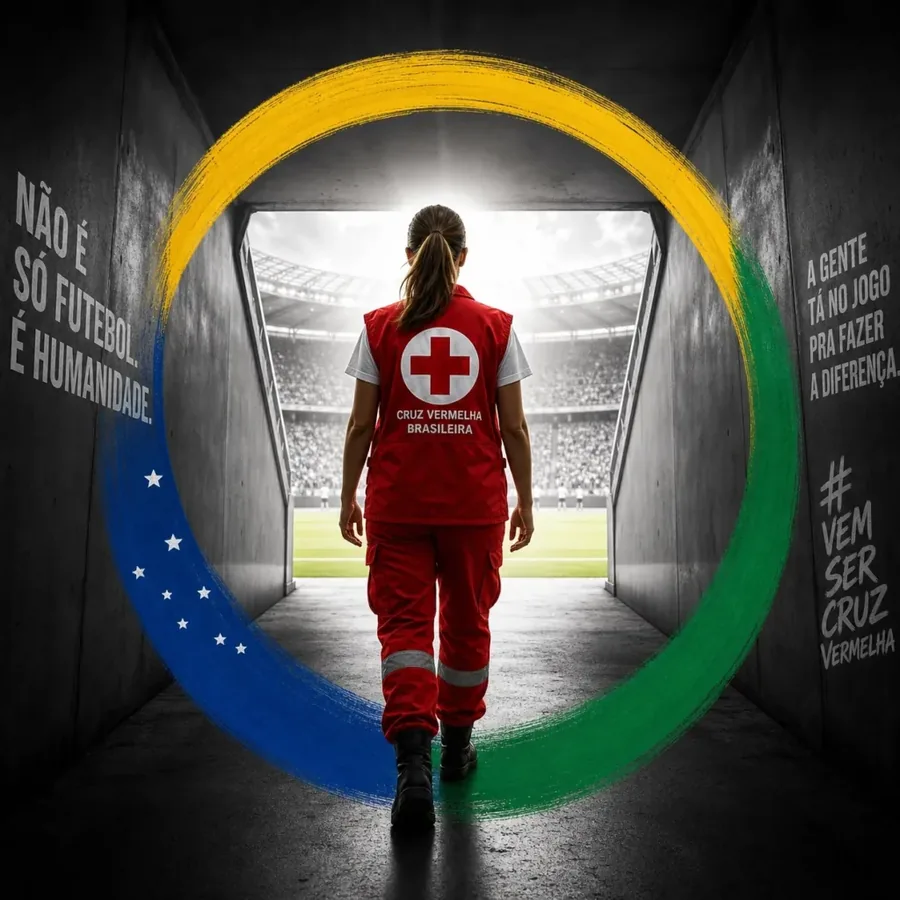
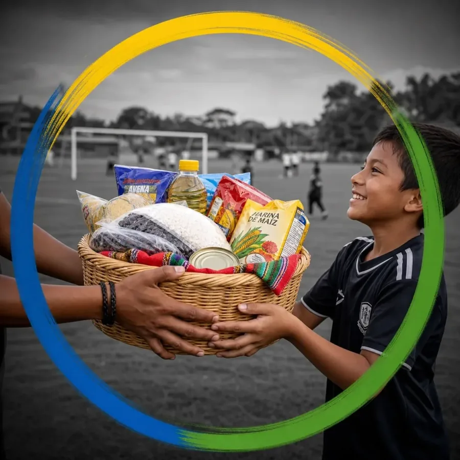
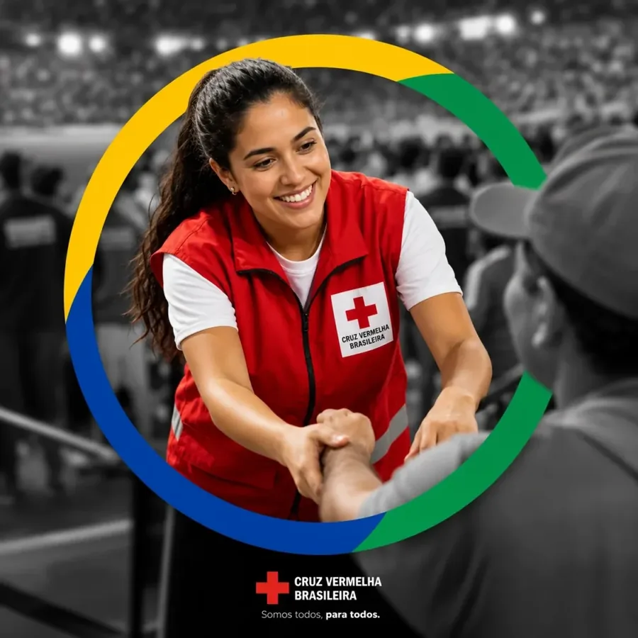
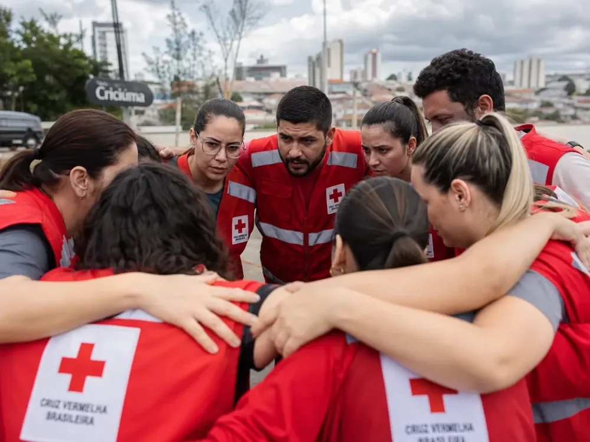

É hora de virar o jogo.
Não é só futebol. É humanidade. A Entre em Campo levou a energia do futebol para a solidariedade e chamou Criciúma para jogar junto com a Cruz Vermelha.

Mudar vidas também é um jogo de equipe.
Promovida pelo curso de Publicidade e Propaganda da UniSATC, a Entre em Campo convidou a comunidade a assumir um compromisso com quem mais precisa na região.
Escolas, comércios, clubes e empresas viraram pontos de coleta, e cada doação entrou em campo para ajudar famílias em vulnerabilidade.
#VemSerCruzVermelha
Três frentes, um só time.
-
01
Alimentos
Arroz, feijão, macarrão, óleo, farinha, leite em pó e enlatados, lacrados e dentro da validade.
-
02
Agasalhos
Roupas infantis e adultas em bom estado, cobertores, meias, toucas e calçados fechados.
-
03
Medicamentos
Analgésicos, anti-inflamatórios, xaropes e outros de uso comum. Vencidos também foram recebidos, para descarte correto.
Escalação Cruz Vermelha
Turma de Publicidade e Propaganda da UniSATC.
- Aimée Souza Argemi
- Bruno de Souza Pedroso
- Camilly Souza Cardoso
- Fernanda Rodrigues de Aguiar
- João Antonio Rosso Rodrigues
- Larissa Lourenço
- Larissa de Souza Vidal
- Lívia Zampoli
- Ludmilla Oening Antunes
- Maria Eduarda de Melo Martinelli
- Maria Eduarda Martins Casagrande
- Maria Eduarda Porto Cardoso
- Natália Bitencourt
- Sabrina Zanini
- Tainá Pereira Faria
- Vanderson Rosseti
- Lucas Pereira Damazio
16 pontos de coleta espalhados pela cidade.
Empresas, escolas e instituições que abriram as portas para receber as doações.




O jogo continua. Agora é Natal.
A nova campanha da Cruz Vermelha com a UniSATC já está em campo.
Conhecer a Abrace uma História